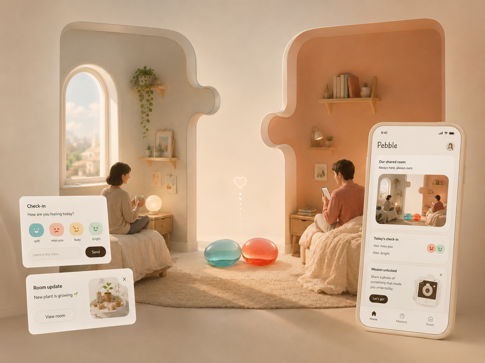
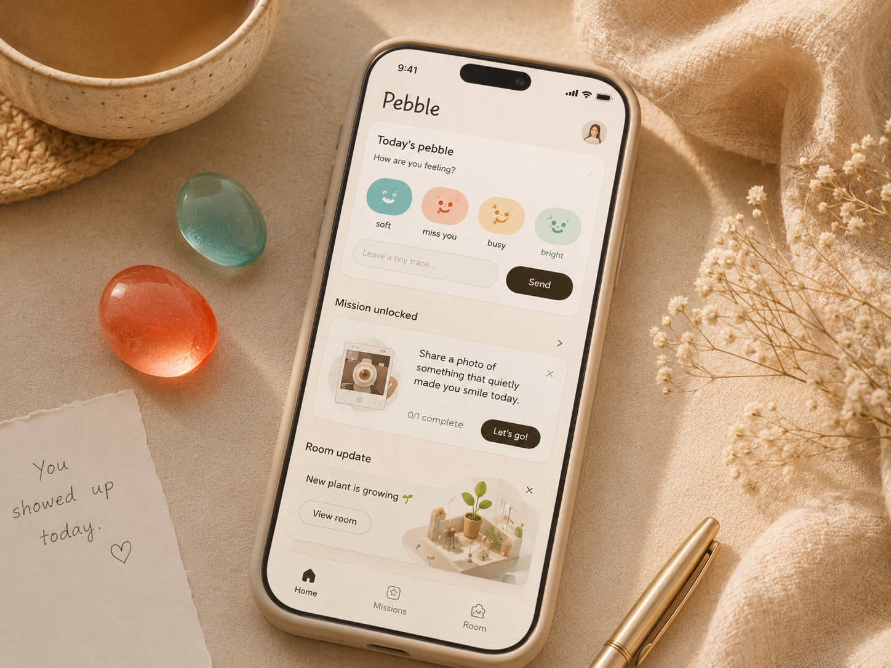

Pebble
A long-distance relationship app built around tiny daily commitments, small enough to keep and steady enough to feel like company.

Pebble's visual metaphor: two separate rooms, two small companion stones, and a shared space built from a distance.
01 / Context
Long-distance care often fails when it becomes another task to manage
Pebble started from a simple observation. People in long-distance relationships do not always need another serious check-in. Sometimes they need a small signal that says, I am still here today. Most relationship apps lean on calendars, tracking, or heavy sentimentality, turning connection into a chore instead of a place to return to.
The name reflects that intent. A pebble is ordinary and easy to carry. It makes no grand promise, only a small, repeated commitment.
Tagline
Drop a pebble today, send a ripple their way.
02 / Concept
A shared room built through small rituals
The core experience is a shared virtual room. Each person checks in, leaves small traces, unlocks missions, and slowly decorates a space that belongs to both of them. Connection becomes a series of light daily actions instead of ongoing emotional labor.
Sending a pebble is a small daily gesture. It can unlock a question, a mission, or a new detail in the shared room. The goal is continuity, not urgency.

03 / Product Direction
Designed for daily use, not daily pressure
Pebble is built for low-friction participation. A user opens the app, completes one small action, and feels present without writing a long message. The product avoids streak mechanics built on guilt and relies on gentle unlocks, room changes, and playful prompts instead.
The app runs on four loops: daily check-ins, shared room building, unlockable missions, and lightweight traces. Each loop is small on its own. Together they create a rhythm that makes distance feel less empty.
04 / Experience
From check-in to ripple
The flow starts with a check-in. After choosing a mood or sending a pebble, the action creates a ripple in the shared room. That ripple can trigger a question, a mini mission, or a room object to unlock.
The interface stays quiet by design. The app works less like a dashboard and more like a small window into the relationship, where both people can see what the other has been doing without needing to sync perfectly.
05 / Visual System
Soft, tactile, and built for touch
The visual language favors touch over technology. The pebbles are translucent, rounded, and slightly imperfect, like something kept in a pocket. The room imagery uses warm light, soft textiles, and rounded openings to communicate separation and connection at once.
Typography is rounded and playful without becoming childish. The final direction pairs a rounded sans with a soft serif for warmth and legibility.

06 / Reflection
A relationship product does not need to be loud to matter
Pebble pushed me to think about emotional interaction design at a small scale. The real design question was not how to increase engagement, but how to make a tiny action worth returning to.
The puzzle-room metaphor became the strongest direction because it explains the product without over-explaining the interface. Distance does not disappear, but two people can still build something shared across it.
Built with
- Design
- Claire Lin
- Research
- Claire Lin
- Branding
- Claire Lin
- Status
- Personal project, in progress